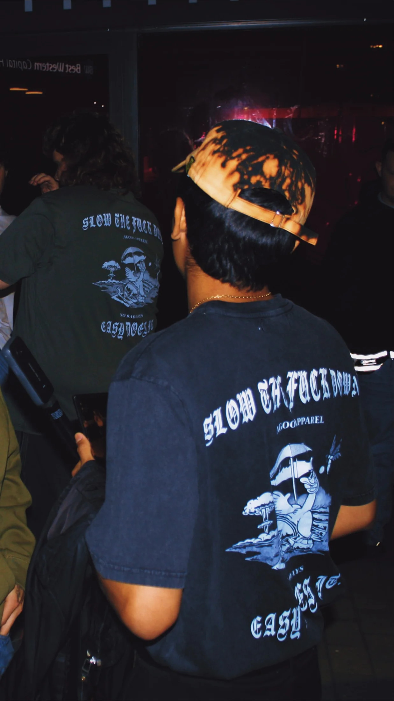
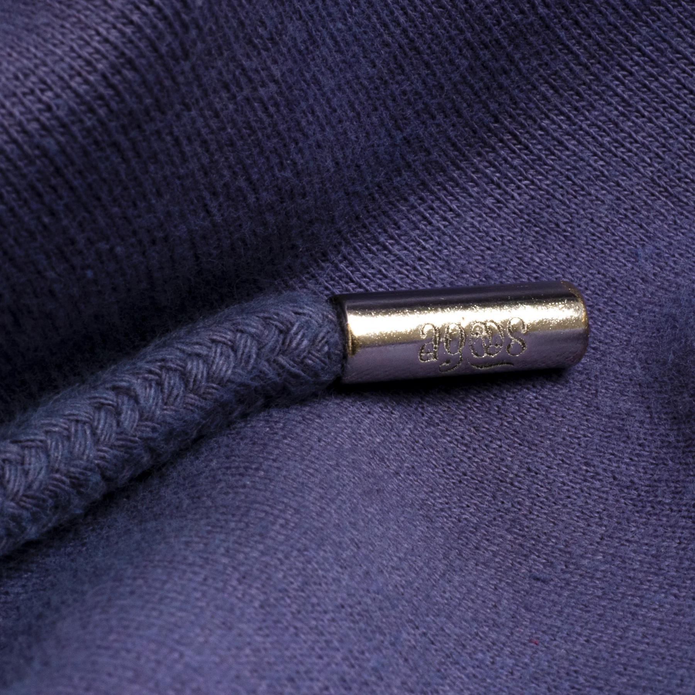
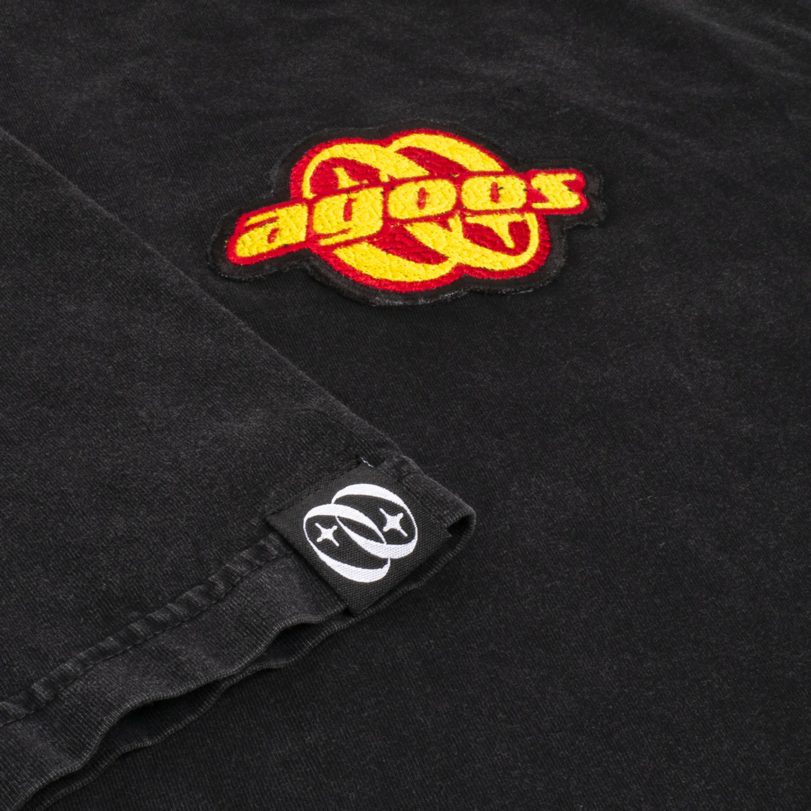
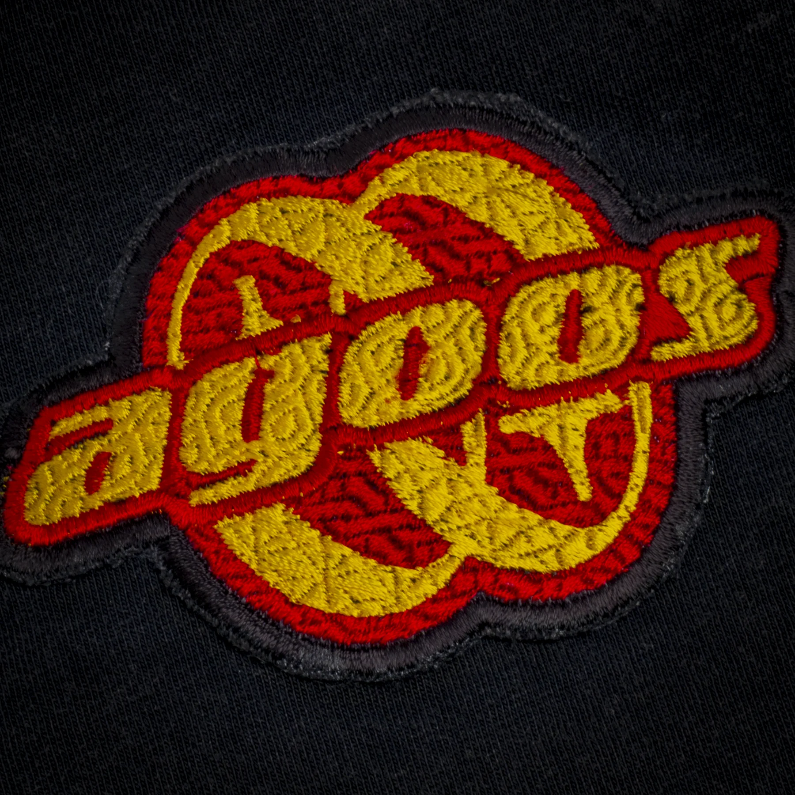
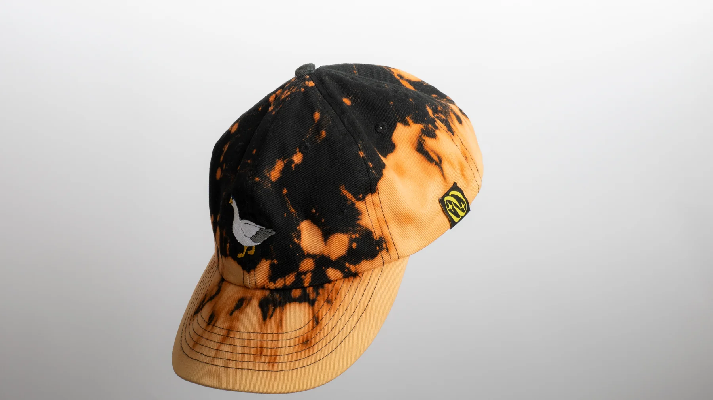
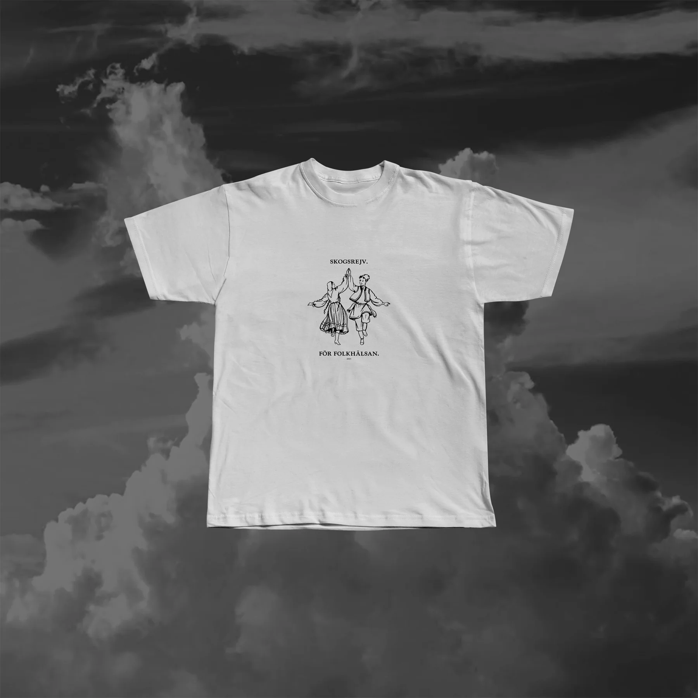
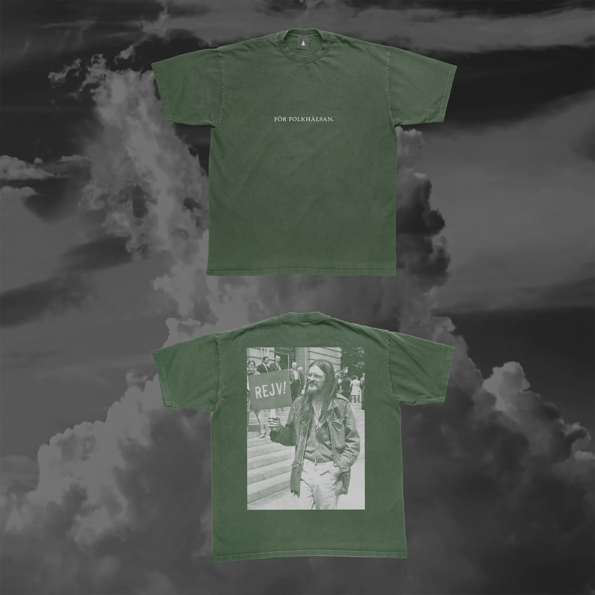
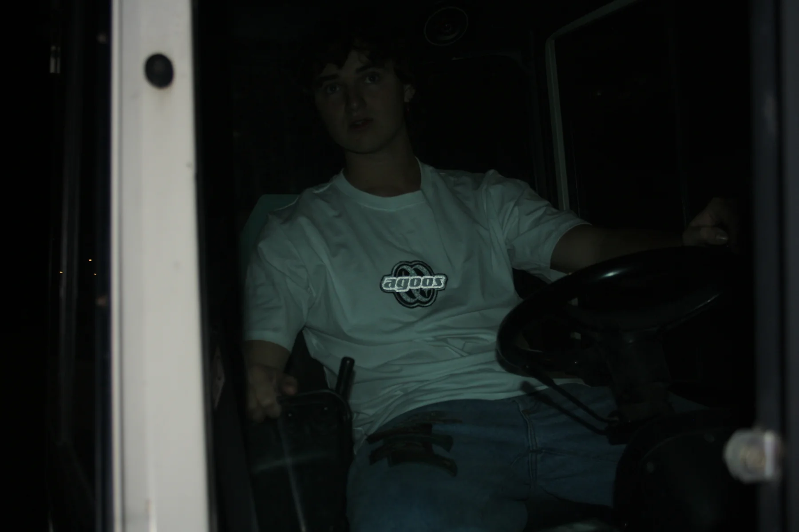
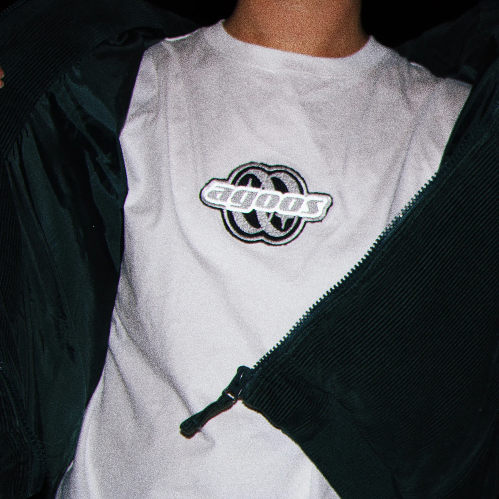
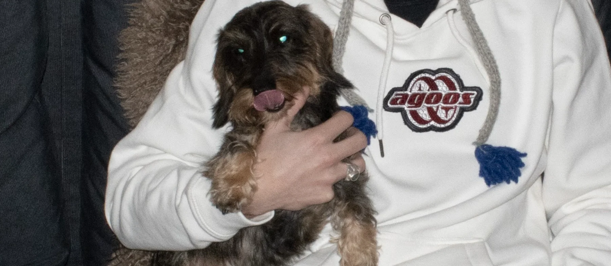

Independent clothing project / Archive
Agoos
Apparel
Art direction, design & operations.
I joined Agoos as head art director and designer, then later took over running the brand. It was small enough that creative decisions and practical operations were never separate jobs.
I designed collections and graphics, ran releases and organic social content, worked with suppliers and manufacturers, handled the shop and answered customers myself.

Scope Clothing · graphics · production · photography · e-commerce
01 / Design and production
Making
the clothes.
I screen-printed pieces myself, developed embroidery and sewn details, photographed releases, managed the shop and social content, worked with manufacturers and handled customer support.
Each design had to work on a real garment and be possible to produce at our scale.




02 / Collaboration
Skogrejv
merchandise.
We also made merchandise with artists, businesses and cultural organisers. This collection became merchandise for Skogrejv , a Stockholm rave collective.


03 / Operations
Running
Agoos.
I handled product ideas, sourcing, manufacturing conversations, e-commerce, photography, organic marketing, customer support and the day-to-day decisions behind each release. Agoos gradually expanded from a clothing brand into merchandise design and screen-printing work.


